Regression comparison
Download resultsAggregation weights
\widehat y(x)=y_{\rm mean}+y_{\rm std}\sum_{h=1}^{H}\beta_h\mu_h(x)Coefficients can be negative and need not sum to one. Intervals describe coefficient uncertainty; the dashed reference is DE’s fixed 1/H weight.
BDKN
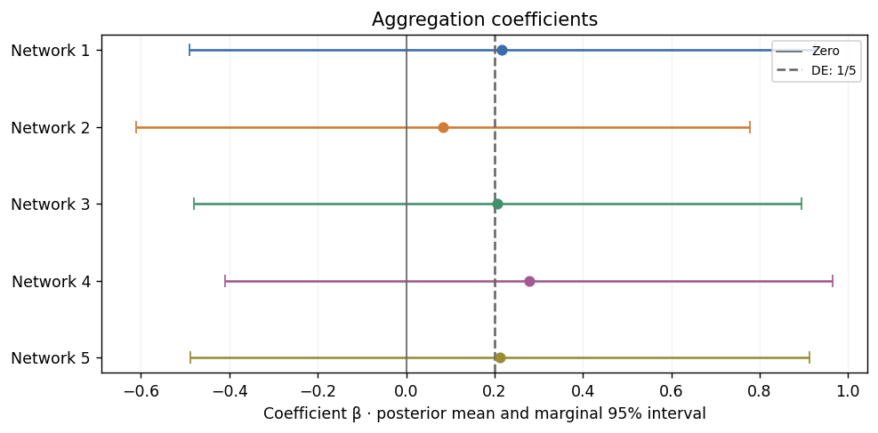


Each density panel uses its own X range for readability; coefficient intervals above share a common axis. Prior reference conditions on fitted noise. Contribution shares use held-out inputs; test targets are used only for scoring.
| Network | β mean | 95% low | 95% high | P(β > 0) | Contribution share | Test RMSE | Test NLL |
|---|---|---|---|---|---|---|---|
| 1 | 0.21696 | -0.49120 | 0.92513 | 0.73035 | 0.17700 | 2.18420 | 209.95203 |
| 2 | 0.08393 | -0.61020 | 0.77806 | 0.59590 | 0.06140 | 2.03148 | 169.38755 |
| 3 | 0.20692 | -0.48031 | 0.89416 | 0.72686 | 0.23265 | 3.31554 | 985.68460 |
| 4 | 0.27844 | -0.40889 | 0.96578 | 0.79111 | 0.30558 | 3.01797 | 517.36540 |
| 5 | 0.21214 | -0.48923 | 0.91351 | 0.72777 | 0.22337 | 3.07438 | 730.92977 |
Functional repulsion · BDKN
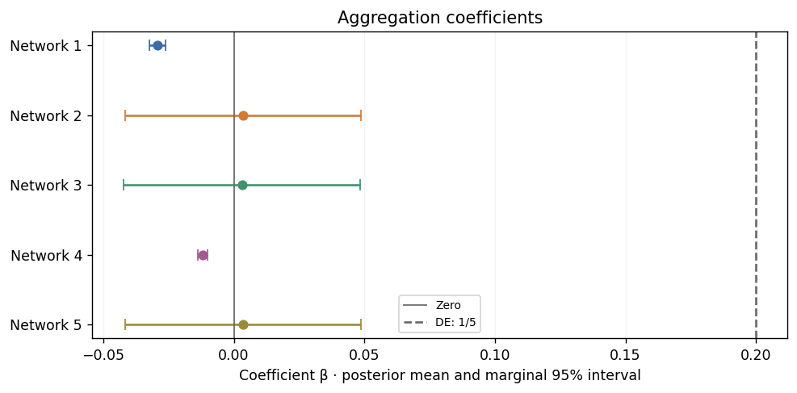
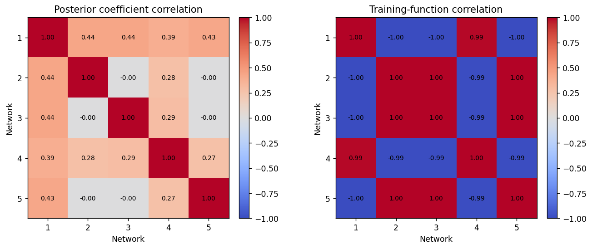
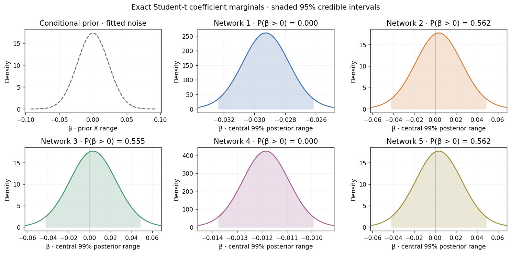
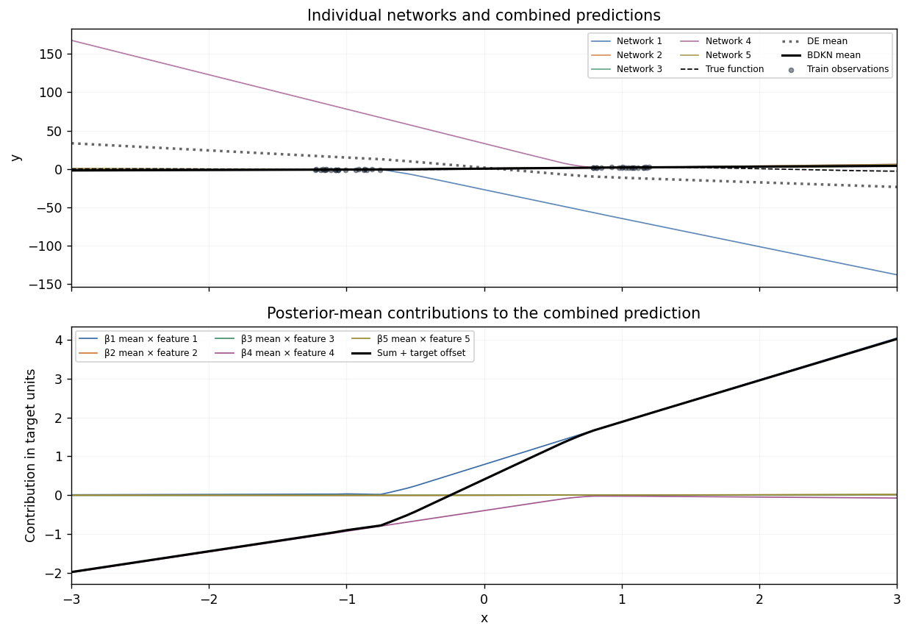
Each density panel uses its own X range for readability; coefficient intervals above share a common axis. Prior reference conditions on fitted noise. Contribution shares use held-out inputs; test targets are used only for scoring.
| Network | β mean | 95% low | 95% high | P(β > 0) | Contribution share | Test RMSE | Test NLL |
|---|---|---|---|---|---|---|---|
| 1 | -0.02926 | -0.03233 | -0.02619 | 0.00000 | 0.68184 | 64.97998 | 3.91797 |
| 2 | 0.00350 | -0.04170 | 0.04870 | 0.56182 | 0.00258 | 2.13002 | 118.96961 |
| 3 | 0.00310 | -0.04211 | 0.04832 | 0.55480 | 0.00277 | 2.48041 | 194.47326 |
| 4 | -0.01184 | -0.01374 | -0.00995 | 0.00000 | 0.30948 | 74.45723 | 71.19286 |
| 5 | 0.00353 | -0.04167 | 0.04874 | 0.56235 | 0.00334 | 2.88348 | 939.57008 |
Weight repulsion · BDKN
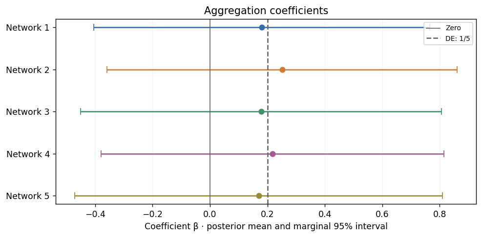
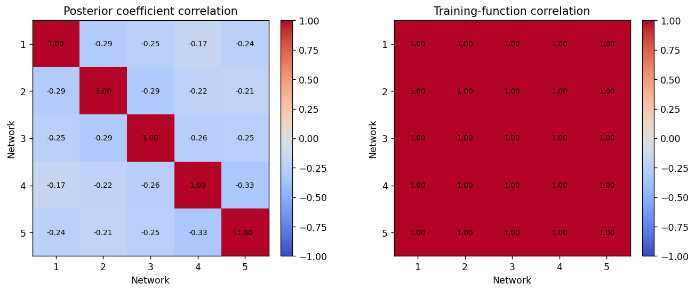
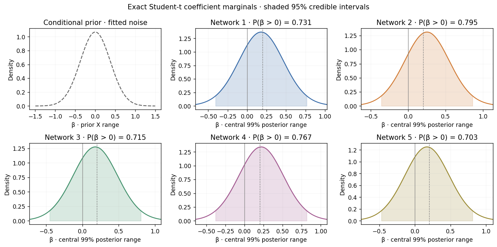

Each density panel uses its own X range for readability; coefficient intervals above share a common axis. Prior reference conditions on fitted noise. Contribution shares use held-out inputs; test targets are used only for scoring.
| Network | β mean | 95% low | 95% high | P(β > 0) | Contribution share | Test RMSE | Test NLL |
|---|---|---|---|---|---|---|---|
| 1 | 0.18020 | -0.40553 | 0.76594 | 0.73119 | 0.34989 | 34.16556 | 17.00797 |
| 2 | 0.25123 | -0.35887 | 0.86133 | 0.79490 | 0.10059 | 8.96824 | 18203609.79651 |
| 3 | 0.17790 | -0.45012 | 0.80592 | 0.71491 | 0.25572 | 23.43813 | 58446954.17412 |
| 4 | 0.21792 | -0.37955 | 0.81540 | 0.76734 | 0.24043 | 22.86353 | 10.15719 |
| 5 | 0.17001 | -0.47047 | 0.81049 | 0.70270 | 0.05337 | 5.06288 | 4647903.73387 |
First-order repulsion · BDKN
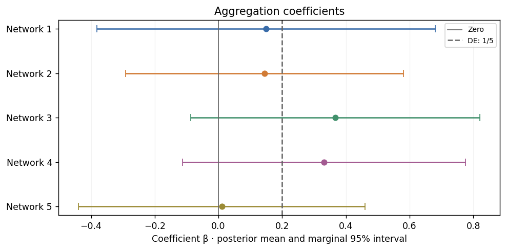
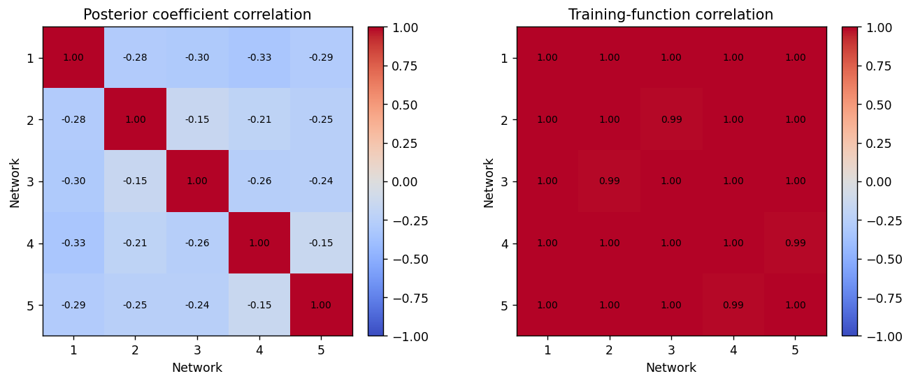
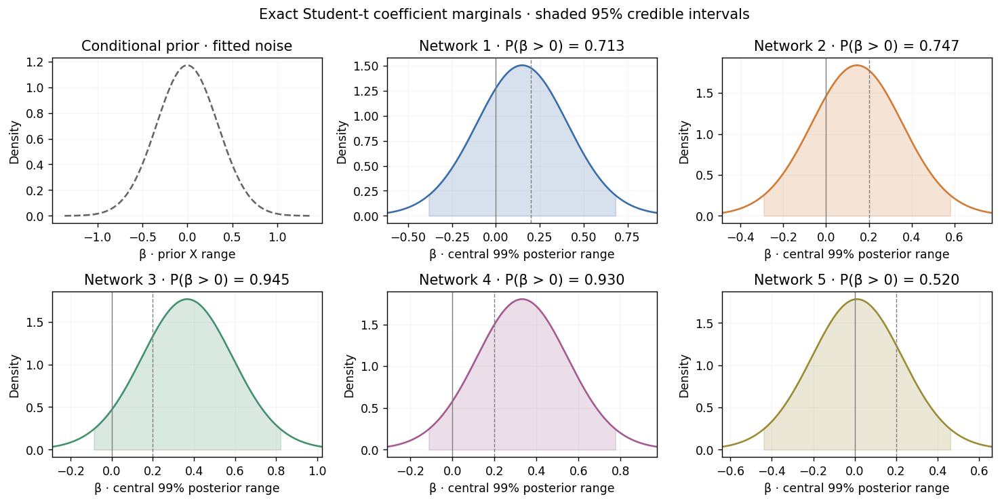
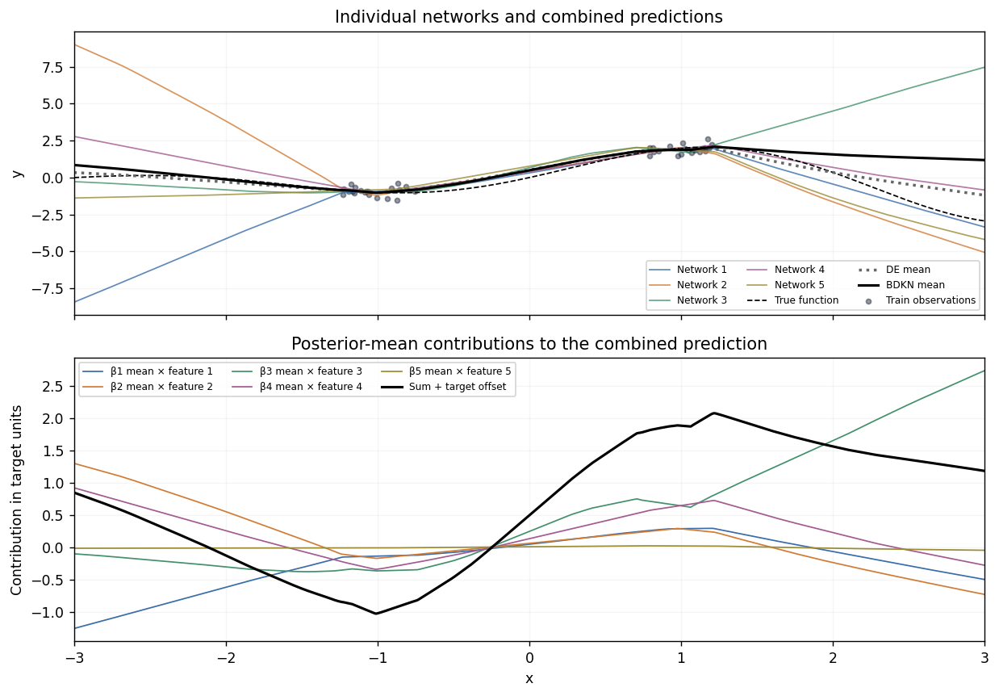
Each density panel uses its own X range for readability; coefficient intervals above share a common axis. Prior reference conditions on fitted noise. Contribution shares use held-out inputs; test targets are used only for scoring.
| Network | β mean | 95% low | 95% high | P(β > 0) | Contribution share | Test RMSE | Test NLL |
|---|---|---|---|---|---|---|---|
| 1 | 0.14952 | -0.38229 | 0.68134 | 0.71347 | 0.17587 | 2.69289 | 661.60712 |
| 2 | 0.14454 | -0.29117 | 0.58025 | 0.74679 | 0.18469 | 2.92353 | 1315.87124 |
| 3 | 0.36734 | -0.08641 | 0.82109 | 0.94518 | 0.45475 | 3.36612 | 1139.21337 |
| 4 | 0.33175 | -0.11249 | 0.77598 | 0.93046 | 0.17629 | 1.01799 | 1623.00665 |
| 5 | 0.01107 | -0.43879 | 0.46094 | 0.51971 | 0.00840 | 1.06322 | 710.77187 |